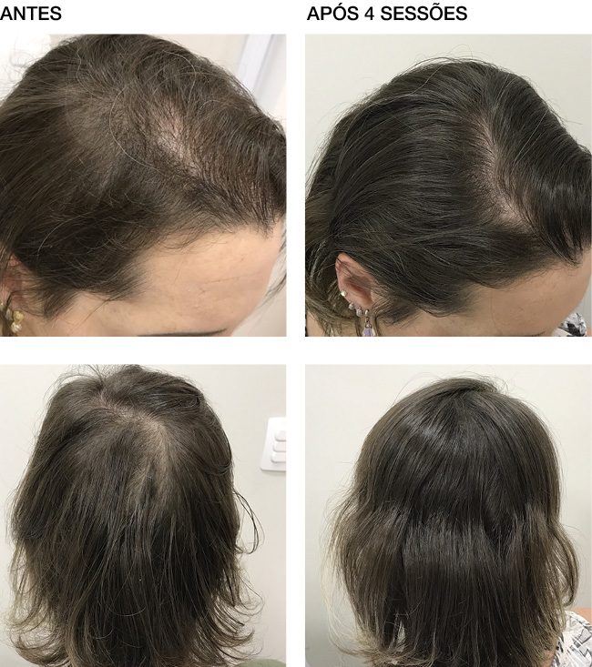

Você já passou pela angústia de ver o ralo do chuveiro cheio de cabelo? Ou de passar a mão pelos fios e sentir que estão cada vez mais finos e sem vida? Se sim, saiba que você não está sozinha. Segundo a Sociedade Brasileira de Dermatologia, essa é uma preocupação que afeta milhões de brasileiras todos os dias.
Essa situação não afeta apenas a aparência, mas também a autoestima. A cada fio perdido, cresce a insegurança. Muitas mulheres gastam fortunas com tratamentos caros e procedimentos invasivos, mas continuam frustradas, sem ver resultado real. Até agora.
A Ciência por Trás de um Antigo Segredo da Natureza
Pesquisadores da Universidade de Tóquio revelaram recentemente uma combinação natural que estimula o crescimento capilar desde a raiz. Baseado em rituais milenares japoneses, o método foi adaptado para uso caseiro e chamou a atenção da tricologista Dra. Maria Silva, especialista em saúde capilar.
"Segundo ela, essa fórmula age diretamente no folículo, reativando o crescimento e aumentando a densidade dos fios sem química agressiva ou efeitos colaterais.
O que a Pesquisa Revelou?
- ✔Diminuição da Queda em até 95%: A fórmula fortalece a ancoragem do fio no couro cabeludo, reduzindo a queda de forma drástica.
- ✔Crescimento Acelerado: Os testes indicaram um crescimento capilar até 7x mais rápido que o normal, graças à nutrição intensiva do folículo.
- ✔Aumento da Massa Capilar: A ativação de folículos adormecidos resulta no nascimento de novos fios, mais grossos e saudáveis, aumentando o volume geral do cabelo.
"É um avanço significativo. Finalmente temos uma fórmula que é não apenas eficaz, mas também segura, sendo testada e aprovada pela ANVISA. Isso dá uma tranquilidade imensa para recomendar o uso contínuo." — Dra. Maria Silva, Tricologista
A combinação desses fatores tem chamado a atenção, e muitas mulheres que testaram o método relatam uma mudança significativa na saúde e aparência de seus cabelos.
Resultados Reais que Impressionam:
Recebemos relatos de leitoras que decidiram experimentar o método e compartilharam suas experiências.
Onde Encontrar o Kit Recomendado
Devido à alta procura após esta matéria, o Kit S.O.S Crescimento está sendo vendido apenas pelo site oficial para evitar falsificações e garantir a garantia de qualidade. Produtos vendidos fora do site oficial não têm comprovação e podem prejudicar a saúde do couro cabeludo.
Até o fechamento desta matéria, o fabricante liberou um desconto exclusivo para as leitoras do portal, válido por tempo limitado.
Seu Risco é ZERO!
O melhor de tudo é que este método é 100% natural e possui uma garantia de satisfação de 30 dias. Se você não amar os resultados, terá seu dinheiro de volta.
Atenção: Devido à alta demanda pelos ingredientes, os estoques são limitados.